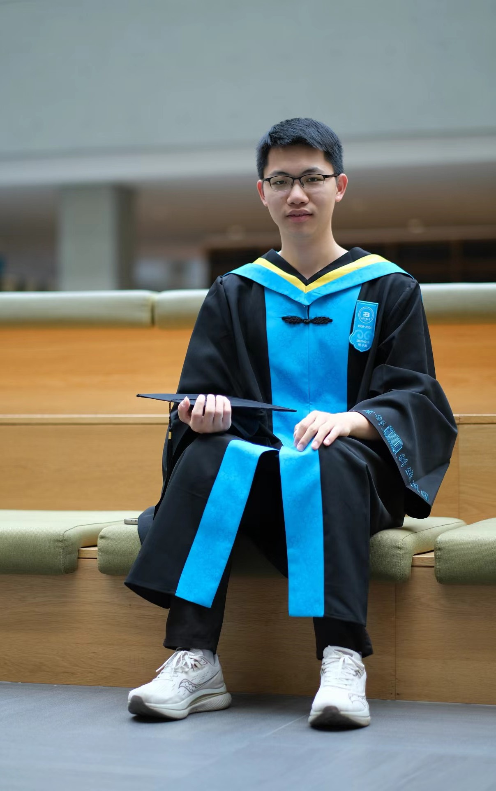

|
Ziyu Zhou 周子渔 I am an MPhil student of the CityMind Lab, @HKUST(GZ), under the supervision of Prof. Yuxuan Liang. Previously, I completed my undergraduate degree in Computer Science and Technology at the Beijing University of Technology, where I conducted my research under the guidance of Prof. Gengyu Lyu at the DMS Lab. During my undergraduate studies, I had the privilege of collaborating with Yiming Huang @HKUST(GZ) and Zihao Wang @HKUST. I aspire to build deep and enduring collaborations with fellow researchers in the future. My research interests are structured around two principal domains:
These areas collectively aim to deepen our understanding of self-supervised learning of time series and enhance interpretability in multi-modal deep learning, pushing the boundaries of what these technologies can achieve. |
 |
{kind=link}
My Quote |
|
"The purpose of computing is insight, not numbers." —— Richard Wesley Hamming |
News |
| 2024/06/29 | I was awarded as Outstanding Graduate Thesis and Outstanding Graduates of Beijing. |
|---|---|
| 2024/04/17 | One paper about time series forecasting was accepted by IJCAI'24. |
| 2023/12/01 | I decided to accept the MPhil offer from HKUST(GZ) Fok Ying Tung Graduate School. |
| 2023/10/26 | One paper about PM2.5 forecasting was accepted by Atmosphere. |
| 2023/08/25 | One paper about ASD detection was accepted by PRICAI'23. |
| 2023/03/24 | I achieved a satisfactory academic IELTS band score of 7.5 (8,8,6.5,6.5). |
Research Programs & Publication(* denotes corresponding author and ^ indicates equal contribution.) |

|
SDformer: Transformer with Spectral Filter and Dynamic Attention for Multivariate Time Series Long-term Forecasting
Ziyu Zhou, Gengyu Lyu*, Yiming Huang, Zihao Wang, Ziyu Jia, Zhen Yang The 33rd International Joint Conference on Artificial Intelligence (IJCAI '24, CCF-A & CORE-A*) The Only Long Oral Paper of the Time Series Session (1/12) Paper Link / PDF / Code / Poster We propose a novel Transformer architecture (named SDformer) for long-term time series forecasting. It is the first time to address the problem of smooth attention distribution when modeling time series data with a large number of variates. |

|
TimesNet-PM2.5: Interpretable TimesNet for Disentangling Intraperiod and Interperiod Variations in PM2.5 Prediction
Yiming Huang^, Ziyu Zhou^, Zihao Wang^, Xiaoying Zhi, Xiliang Liu* Atmosphere (JCR-Q3) Paper Link In this paper, we accomplish task-specific adaption of TimesNet (ICLR '23) named TimesNet-PM2.5. This specialized version improved the performance and interpretability of the PM2.5 prediction of Haikou, Hainan Province. |

|
STFM: Enhancing Autism Spectrum Disorder Classification Through Ensemble Learning-Based Fusion of Temporal and Spatial fMRI Patterns
Ziyu Zhou^, Yiming Huang^, Yining Wang^, Yin Liang* The 20th Pacific Rim International Conference on Artificial Intelligence (PRICAI '23, CCF-C & CORE-B) Paper Link / PDF We propose a Spatial and Temporal framework named STFM based on cross-attention for better autism spectrum disorder classification. The results show that STFM's classification accuracy surpassed that of many machine learning models. |

|
CoC-GAN: Employing Context Cluster for Unveiling a New Pathway in Image Generation
Zihao Wang^, Yiming Huang^, Ziyu Zhou^ Arxiv(2023) 2308.11857 arXiv We employ Context-Clustering Block (ICLR '23) into GAN for better interpretability. |
Education Background |

|
Hong Kong University of Science and Technology(GZ)Master of Philosophy in Data Science and Analytics2024.09 - 2026.06, Guangzhou, Nansha |

|
Bejing University of TechnologyB.Eng. in Computer Science and Technology with Honours DegreesOutstanding Graduate Thesis 北京市优秀毕业设计（论文）(Top 0.7%)Outstanding Graduates 北京市优秀毕业生(Top 11%)2020.09 - 2024.07, Beijing, Chaoyang |

|
Beijing No.4 High SchoolHigh School Graduate2017.09 - 2020.07, Beijing, Xicheng |